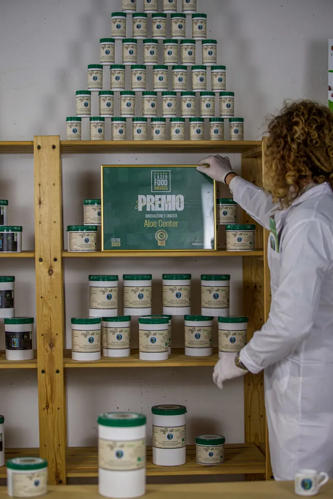

L'unico caffè all'Aloe al mondo.
100% Arabica e Aloe Arborescens biologica. Il gusto del caffè che ami, con un'anima più gentile.
Dentro non c'è un aroma. C'è l'Aloe Code.
Il principio attivo che estraiamo dalle nostre piante in nove anni di lavoro, dalla piantagione al laboratorio.
Al rito di ogni mattina, senza compromessi.
Non è un'alternativa al caffè. È il caffè vero, morbido e rotondo, che si prepara con la moka di sempre.
Per chi ama il caffè e lo vuole più delicato.
Per chi non vuole scegliere tra il gusto e la leggerezza dopo la tazzina.
Ogni mattina merita un caffè che ti rispetta.
Miscela 100% Coffea arabica, gusto morbido, aromatico, equilibrato e rotondo. Per chi non vuole rinunciare al vero caffè.
L'estratto di Aloe Arborescens rende la tazzina più leggera. Senza conservanti, additivi o coloranti.
33 anni di ricerca sulla pianta dell'Aloe: non un prodotto nato per moda, ma il lavoro di una vita.

Premio speciale Innovazione e unicità.
Un riconoscimento all'idea che ha unito il caffè e l'Aloe Arborescens in un prodotto che prima non esisteva.
Il nostro marchio di eccellenza.
- Aloe CodePresenza del principio attivo esclusivo.
- Innovazione e unicitàFormule che esistono solo qui.
- Eccellenza sensorialeGusto e aroma equilibrati.
- Controllo e tracciabilitàDalla pianta al prodotto finito.
- Biologico e naturaleCertificato, senza conservanti né additivi.
«Conosco Aloe Center da ben 25 anni e utilizzo tutti i prodotti regolarmente.»Joanna Palacz
«Ottimo caffè, fresco. Ho già invitato più persone a provarlo.»Stefania
Nove anni per una goccia.
Cinque anni di maturazione della pianta nella nostra coltivazione biologica, poi quattro anni di trasformazione in laboratorio. Dall'Aloe Code nascono il caffè e tutti gli integratori.